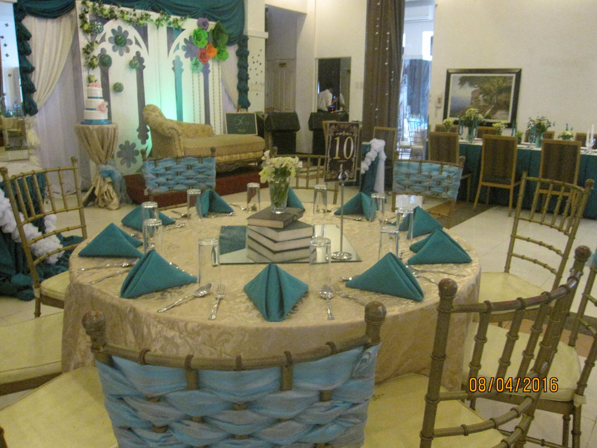

Location:Batangas City Main located at G.C. Berberabe Subd., Pallocan West, Batangas City. |
|
Branches:Pallocan San Pascual Bauan Sabang, Lipa City |
|
|
They are open from 10AM to 12AM. |
|
Contact Info:Pallocan-722 0690 SanPascual-706 6820 Bauan-0943129 3306 Lipa-702 7919 |
|
Website:visit us at our site. |

|

|

|
About:The House of the Best Crispy Pata and Chicken in Town. They serve Crispy Pata, Chicken, Seafood’s, Filipino Breakfast, Sizzling Vegetable Salad, Pancit, Steaks, Sandwiches, Pasta, and Lomi. Also serve Beers, Wines, Fruit Shake, Juices and Soft drinks.They also accept delivery (8am to 10pm).
|
Reviews:"One of the best resto in batangas. Foods-delicious and the ambience is relaxing. Great venue for bonding moments with family and friends."
"So Far, Crispy Pata pa lang ng F.baylosis ang natiktikman ko na talagang pasado sa panlasa ko. Kahit yung sawsawan, ulam na para sakin.. nung last time na kumain kami sa f.baylosis, crispy pata agad ang hinanap ko sa menu!"
"Satisfied ang buong pamilya kaya patuloy kaming bumabalik ang gagaling pa ng singers!"
"The BEST CRISPY PATA! I already ate even in some prestigious restaurants and
WALA TALAGANG KAPANTAY ANG F BAYLOSIS!"
"They are well-trained to attend to their guests’ needs with all sincerity and dedication to their job."
|
Price List:Chopsuey--------------------------240 Tilapia Fiesta----------------------270 Beef Caldereta--------------------350 Sizzlers----------------------------250 Beef kare-kare--------------------355 |
|
Best Seller:F. BAYLOSIS HOUSE OF CRISPY PATA AND CHICKEN. |
|  |